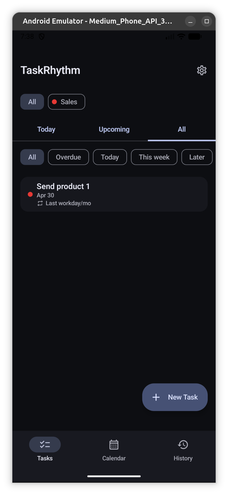
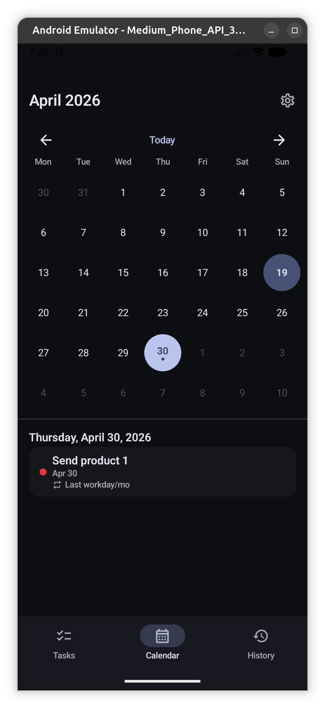
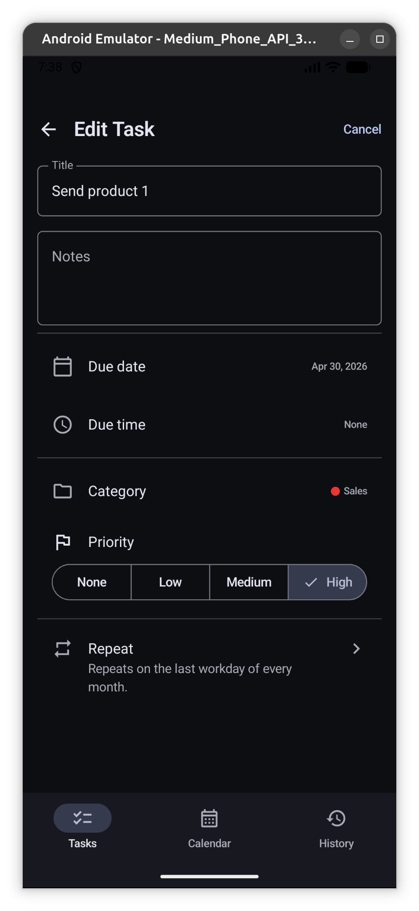
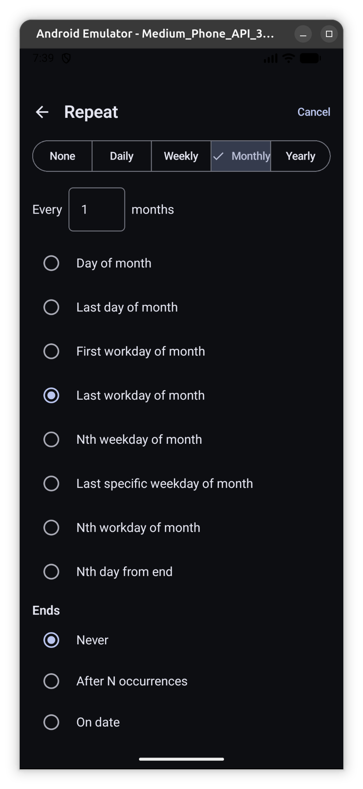
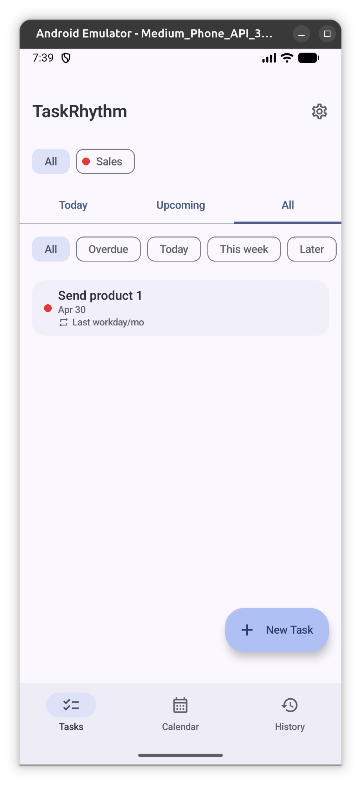

Recurrence that follows the rules you actually use
Most to-do apps treat "repeat monthly" as date arithmetic that breaks on weekends and holidays. TaskRhythm models the patterns the way they’re written.
Workday-aware
First or last workday of the week, month, or year. Nth weekday-of-month. Nth day from the end. Weekday- and weekend-only modes.
Reminders on time
Exact-time local notifications with a default lead-time and per-task overrides. "Done" and "Snooze" actions inline. They survive a reboot.
History & streaks
Every completion is logged. See your streak, 30-day chart, and per-category breakdown — and restore any past completion with one tap.
Calendar & holidays
A month view alongside the day’s tasks. Maintain your own holiday calendar and TaskRhythm intelligently reschedules around it.
Private & Secure
Tasks live in a private database on your phone. No ads, no telemetry. Multi-device sync is opt-in and unlocked only when you choose Pro.
Material You design
Dynamic colour on Android 12+, five curated palettes, and light / dark / true-black themes. Adaptive layouts for phone, tablet, and foldables.
Clean, focused, fast





← Swipe to explore →